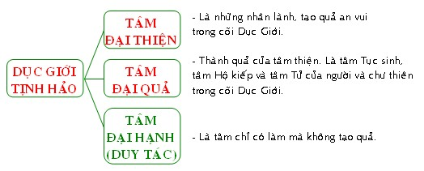
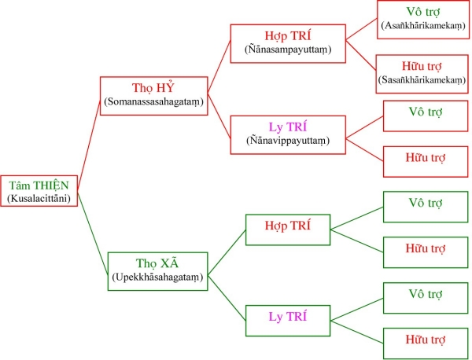
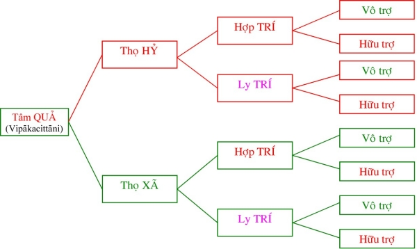
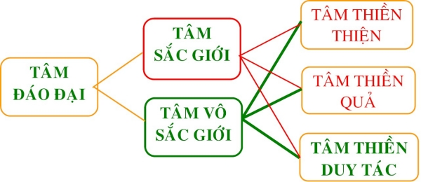

|
PHẬT GIÁO NGUYÊN THỦY THERAVÀDA VI DIỆU PHÁP BAN HOẰNG PHÁP |
|
BuddhaSasana Home Page |
Vietnamese, with Unicode VU Times or CN-Times font |
|
|
PHẬT GIÁO NGUYÊN THỦY THERAVÀDA VI DIỆU PHÁP BAN HOẰNG PHÁP |
|
Xin lưu ý: Cần có phông UnicodeViệt-Phạn VU Times hay CN-Times cài vào máy để đọc các chữ Pàli. |
|
BÀI 7. TÂM
DỤC GIỚI TỊNH HẢO Tâm Dục giới Tịnh Hảo là những tâm tốt đẹp nằm trong lãnh vực Dục giới. Nói theo chi pháp, tâm Dục giới Tịnh Hảo là những tâm Dục giới có Sở Hữu Tịnh Hảo đồng sanh và hòa hợp.  I. Tâm Thiện Dục Giới Tịnh Hảo (Kusalakāmavacaracitta): Là những tâm lành trong cõi dục giới, thường tạo những kết quả an vui. Thiện hay Kusala là từ ngữ căn Ku (Bất thiện) + sala (rung động), vậy Thiện nghĩa là diệt trừ điều bất thiện, diệt trừ ác xấu, đối trị với ác xấu, đối trị với các pháp ác. Ku: bất thiện, Sa: nói láo, La: cắt, chặt. Vậy Kusala là cắt diệt những gì không đúng. Ku: bất thiện, Su: làm cho tiêu tan, La: cắt đứt. Vậy Kusala là làm tiêu tan điều bất thiện. Kusa: là một loại cỏ. Loại cỏ này cắt bàn tay với hai khía lá sắc bén. Cũng vậy Kusala là cắt các phiền não. Tâm thiện Dục giới còn được gọi là tâm Ðại Thiện (Mahākusala Citta) vì những lý do sau đây: Tạo được nhiều quả: Tuy tâm thiện dục giới chỉ có 8 tâm nhưng có thể tạo được 16 tâm quả là: 8 tâm quả thiện Dục giới vô nhân và 8 tâm quả Dục giới hữu nhân. Vì vậy, nên nói là tạo được nhiều quả. Sanh ở nhiều cõi: Tâm thiện này có thể sanh trong tất cả các cõi hữu tâm, chỉ trừ cõi vô tưởng, vì chúng sanh nơi đó không có tâm nên tâm thiện không thể phát sanh nơi đó được. Biết được nhiều cảnh: Có tất cả là 21 cảnh (nếu tính rộng) và tâm thiện dục giới có thể biết hết các cảnh ấy. Vì tâm này rất linh động chứ không cứng ngắt như những tâm thiền (trừ tâm Diệu Trí) chỉ chăm chú vào một cảnh. Tâm đại thiện dục giới gồm 8 thứ tâm căn cứ trên ba phương diện: Thọ hỷ hay thọ xã: Xem lại ở tâm bất thiện. Hợp trí hay ly trí: Hợp trí là tâm thiện khi sanh lên có sự sáng suốt, tinh tường, nhận thức khôn khéo. Ly trí là tâm thiện khi sanh lên không có trí tuệ đồng sinh, tức là tâm tốt đẹp nhưng thiếu sự sáng suốt. Vô trợ hay hữu trợ: Xem lại ở tâm bất thiện. 1) Tâm Ðại Thiện Thọ Hỷ Hợp Trí Vô Trợ: là tâm tốt, khi sanh lên có cảm thọ hoan hỷ, có sự sáng suốt và phát sanh một cách mau lẹ. Thí dụ: như một người lâu ngày không gặp chư tăng, một hôm, trông thấy một nhà sư đi bát liền phát tâm hoan hỷ nghĩ rằng ṁay mắn cho ta được gặp dịp tạo phước", liền đem vật thực để bát. Gặp nhà sư liền phát tâm hoan hỷ: Thọ Hỷ. 2) Tâm Ðại Thiện Thọ Hỷ Hợp Trí Hữu Trợ: là tâm lành sanh lên với cảm giác vui mừng, có sự hiểu biết sáng suốt nhưng phát khởi với sự trì hoản, chậm chạp. Thí dụ: một người có vật quí muốn bố thí, nhưng vì tiếc của nên tâm còn chần chờ, đắn đo. Sau một lúc tự nghĩ śự dứt bỏ, xã ly là pháp cao thượng, quí báu hơn cả vật này", nghĩ vậy xong người đó liền hoan hỷ bố thí. Sự phân vân, nghĩ tới, nghĩ lui của người đó được gọi là hữu trợ. 3) Tâm Ðại Thiện Thọ Hỷ Ly Trí Vô Trợ: Là tâm lành, có cảm thọ vui mừng, phát sanh mau lẹ nhưng thiếu sự sáng suốt. Thí dụ: một người tốt bụng sẳn sàng giúp đở mọi người, nhưng vì thiếu sự suy xét kỷ nên hay bị người lợi dụng. 4) Tâm Ðại Thiện Thọ Hỷ Ly Trí Hữu Trợ: Tâm thiện có cảm giác vui mừng, nhưng thiếu sáng suốt va phát sanh chậm chạp. Thí dụ: một người tánh vốn vui vẻ và không hề biết luật nhân quả. khi có người kêu gọi làm việc từ thiện thì đắn đo nhưng sau cùng vì nể tình nên cũng bắt tay vào. Khi bắt tay vào, với không khí an lành nơi làm việc khiến người ấy cảm thấy vui vẽ, thoải mái. 5) Tâm Ðại Thiện Thọ Xã Hợp Trí Vô Trợ: là tâm thiện có cảm thọ thản nhiên, sáng suốt và sanh khởi rất nhanh. Như một người có thói quen hay làm phước, thấy người cùng khổ, người ấy thản nhiên giúp đở cho không do dự. Sau đó còn biết hồi hướng phước báu đến thân nhân đã quá vảng. 6) Tâm Ðại Thiện Thọ Xã Hợp Trí Hữu Trợ: là tâm lành với cảm thọ thản nhiên, có sự suy xét sáng suốt nhưng cần nhân trợ giúp mới sanh khởi. 7) Tâm Ðại Thiện Thọ Xã Ly Trí Vô Trợ: là tâm thiện có cảm thọ thản nhiên, thiếu sự suy xét sáng suốt, nhưng sanh khởi một cách mau lẹ. Thí dụ một đứa bé thấy cha mẹ đảnh lể tượng Phật liền bắt chước làm theo không do dự. 8) Tâm Ðại Thiện Thọ Xã Ly Trí Hữu Trợ: là tâm lành có cảm thọ bình thản, thiếu sự sáng suốt và khởi lên một cách chậm chạp sau nhiều lần được nhắc nhở. Như một người nghèo nhưng có thiện tâm, thấy người hành khất muốn bố thí nhưng lại do dự vì hoàn cảnh của mình cũng không dư giã gì. Nghĩ đi, nghĩ lại một hồi mới chịu bố thí.  Tâm đại thiện dục giới tịnh hảo làm việc đổng tốc tức là xử sự với cảnh để tạo quả về sau. Vì là tâm thiện nên những tâm đổng tốc này có 10 việc làm tạo quả an vui thường gọi là Thập Hạnh Phúc. 1) Bố Thí: là lòng rộng rải, dứt bỏ vật sở hữu của mình để cho người khác, chia xớt cái mình đang có cho người khác để cùng nhau thoát khổ. 2) Trì giới: là gìn giữ những điều học. Giới tức là tác ý từ bỏ những hành động bất thiện, ác xấu. 3) Tu tiến: là tinh tấn, chuyên niệm hành thiền định, chế ngự và diệt trừ phiền não. 4) Cung kính: là lòng khiêm tốn biết kính trọng những gì đáng kính trọng như cha, mẹ, thầy tổ, bậc chơn tu có giới đức, ... 5) Phục vụ: đem công lao, sức lực của mình vào việc hữu ích, đem lại sự an lạc cho mọi người hoặc phục vụ Tam Bảo, ... 6) Tùy hỷ phước: là hoan hỷ, hài lòng trước nghiệp thiện và quả phước của người khác. 7) Hồi hướng phước: là đem những phước báu mà mình đã tạo được chia đến cho những chúng sanh khác. 8) Thính pháp: là nghe những điều hay lẽ phải, học những pháp tốt đẹp cao thượng. 9) Thuyết pháp: là những điều tốt đẹp, có hữu ích khiến người nghe sau khi thực hành được nhiều lợi lạc. 10) Cải chánh: là sửa đổi, tu chỉnh cho tâm được trong sạch, tốt đẹp. Ngoài 10 điều kể trên, tất cả các hành động thiện khác được thực hành trong cõi dục giới cũng đều xuất phát từ những tâm thiện tịnh hảo này. Về tác năng tạo quả của tâm đại thiện dục giới tịnh hảo được chia làm ba trường hợp: 1) Bốn tâm đại thiện dục giới hợp trí khi làm việc có đủ tam tư (Tiền Tư: suy nghĩ trước khi làm; Hiện tư: suy xét lúc đang làm; Hậu tư: nhớ lại sau khi làm.). Thì tâm thiện này sẽ cho quả nhiều nhất (16 tâm quả). 2) Tâm đại thiện hợp trí, khi làm việc lành thiếu tam tư hoặc tâm đại thiện ly trí, nhưng khi làm việc lành có đủ tam tư – cả hai trường hợp này đều cho 12 tâm quả là 8 tâm quả thiện dục giới vô nhân và 4 tâm quả dục giới tịnh hảo ly trí. 3) Tâm đại thiện dục giới ly trí khi làm việc lành thiếu tam tư chỉ cho 8 tâm quả dục giới vô nhân Về phương diện tạo quả mạnh yếu thì Những tâm thọ hỷ, khi làm việc lành, tạo quả mạnh hơn những tâm thọ xã. Những tâm hợp trí, khi làm việc lành, tạo quả mạnh hơn những tâm ly trí. Những tâm vô trợ, khi làm việc lành, tạo quả mạnh hơn những tâm hữu trợ. Sở dỉ như vậy vì nghiệp là sự cố ý (Phật ngôn: " Nghiệp là sở hữu Tư ") nên những tâm nào khi tạo nghiệp có chủ ý mạnh thì sẽ tạo quả mạnh. Tâm Thiện Dục Giới Tịnh Hảo được phát sanh bởi 5 nguyên nhân sau: 1) Sự tác ý (Mānasikāra): là sự chú tâm, chủ ý trước đối tượng. Nếu không khéo tác ý là nhân sanh tâm bất thiện thì khéo tác ý là nhân của tâm thiện (xin xem lại tâm bất thiện). 2) Môi trường sống (Varo): Gần mực thì đen, gần đèn thì sáng. Do đó, ta có thể thấy nơi trú ngụ cũng có phần nào ảnh hưởng đến tâm tính và đời sống của chúng ta. Nếu ở nơi không nên ở là nhân sanh tâm bất thiện thì cư ngụ nơi đáng cư ngụ là nhân sanh tâm thiện vậy. 3) Sự thân cận (Sevana): là một trong những ảnh hưởng, chi phối mạnh mẽ nhất đối với tâm tánh của chúng ta; môi trường sống chỉ chi phối được chúng ta phần nào, nhưng những người mà ta thân cận chi phối chúng ta mạnh hơn nữa (do ái dục), làm cho ta dể bị tiêm nhiễm nhiều hơn nữa. Nếu thân cận phi thiện nhơn là nhân sanh tâm bất thiện thì thân cận thiện nhơn là nhân cần thiết để sanh tâm tịnh hảo. 4) Thói quen (Niccakara): là một chi phối, điều khiển, có tác dụng lớn đến đời sống của chúng ta. Ban đầu ta tạo thói quen, sau thói quen tạo lại ta. Thật khó khăn khi phải từ bỏ những việc thường làm, vì ta thường bị thói quen sai khiến, do đó, nếu tập thói quen xấu sẽ khiến ta hành động xấu và nếu tập được thói quen tốt sẽ khiến ta hành động tốt, tức là trợ cho tâm thiện sanh khởi. 5) Chí hướng (Panidhi): là một sự dẩn dắt có tác năng ảnh hưởng lớn đến đời sống của chúng ta. Một chí hướng tốt sẽ khiến chúng ta đi trên con đường tốt tức là nhân trợ sanh tâm thiện. II. Tâm Ðại Quả Dục Giới Tịnh Hảo (Mahāvipākakamvacaracitta): Là những tâm thành tựu do tâm đại thiện dục giới, mặc dù cùng là quả của tâm đại thiện nhưng tâm đại quả dục giới tịnh hảo có phần thù thắng hơn những tâm quả thiện vô nhân, vì những tâm này được thành tựu bởi những tâm đại thiện hợp trí hoặc có tam tư. Tâm Ðại Quả Dục Giới Tịnh hảo gồm có 8 tâm cũng chia theo ba phương diện như tâm thiện: Thọ hỷ – Thọ xã; Hợp trí – Ly trí; Vô trợ – Hữu trợ.  Ðiều cần nhớ ở đây là những tâm đại quả hợp trí là kết quả của những tâm đại thiện hợp trí đủ tam tư, còn những tâm đại quả ly trí là kết quả của những tâm đại thiện ly trí đủ tam tư hoặc những tâm đại thiện hợp trí thiếu tam tư. Tâm đại quả dục giới tịnh hảo làm 4 công tác sau đây: 1) Việc tục sinh (Paṭisandhikicca): Là tâm nối liền kiếp sống củ và đời sống mới. Tức là khởi đầu đời sống của chúng ta. Trong giờ phút lâm chung khi tâm tử tức hộ kiếp cuối cùng của đời sống vừa chấm dứt, nếu đủ điều kiện, một trong những tâm quả tương xứng với một hành động thiện hoặc ác nào đó mà ta đã tạo trong lúc còn tráng kiện sẽ sanh khởi lên để tạo một đời sống mới, tức là kiếp sau. Trường hợp tâm quả dục giới tịnh hảo làm công tác tục sinh; nếu là tâm hợp trí thì sẽ làm việc tục sinh cho người tam nhân. Nếu ly trí, thì sẽ làm việc tục sinh cho người nhị nhân. 2) Hộ kiếp (Bhavaṅgakicca): Là tâm duy trì kiếp sống, thường được gọi là tiềm thức. Những tâm này là tâm chủ quan của đời sống, sanh khởi khi chưa có cảnh mới hiện vào. Những tâm hộ kiếp là những tâm giống như tâm tục sinh; tục sinh bằng tâm nào thì sẽ hộ kiếp bằng tâm đó. Những tâm hộ kiếp cùng bắt một cảnh mà tâm tục sinh đã bắt. 3) Việc tử: (Cutikicca): Là tâm cuối cùng của đời sống, tâm này cũng giống như tâm hộ kiếp, ta có thể gọi nó là tâm hộ kiếp cuối cùng của đời sống. Khi tục sinh và hộ kiếp bằng tâm nào thì sẽ tử bằng tâm đoù. 4) Việc thập di (Tadarammanā): Là sự thâu bắt cảnh dư của tâm đổng lực, còn gọi là tâm mót, vì tâm này sanh lên sau khi tâm đổng lực đã xử sự với cảnh. Người nào tục sinh bằng tâm vô trợ thì tánh tình linh động, mau lẹ, nhanh nhẹn. Người nào tục sinh bằng tâm hữu trợ thì tánh tình chậm chạp, không được linh hoạt lắm. III. Tâm Ðại Hạnh (Duy Tác) Dục Giới Tịnh Hảo (Mahākiriyakāmavacaracitta): Là những tâm chỉ xuất hiện để đối xử với cảnh và khi diệt đi không để lại dấu vết (Duy=chỉ; Tác=làm. Duy Tác=Chỉ làm). Những tâm này chỉ sanh nơi cơ tánh của vị A-La-Hán. Trừ lúc nhập thiền, trong đời sống bình nhật vị A-La-Hán xử dụng tâm duy tác tịnh hảo để đối xử với cảnh. Sở dĩ vị A-La-Hán hành động những việc giống như việc thiện mà không có tạo quả vì các vị này đã đoạn trừ vô minh và ái dục (tức là hai nguồn gốc của nghiệp). Ðiều cần ghi nhận ở đây là tuy các vị A-La-Hán hay Ðức Phật tuy làm việc thiện mà không tạo quả, nhưng các ngài vẩn nhận 23 tâm quả dục giới sanh ra do những hành động thiện hay ác mà các ngài đã làm trước khi chứng được quả vị thanh tịnh. Tâm Ðại Hạnh (Duy Tác) Dục Giới Tịnh Hảo gồm có 8 tâm giống như tâm đại thiện.
Trường hợp vị A-La-Hán gặp đối tượng tạo sự hoan hỷ, các ngài dùng tâm thọ hỷ, còn lúc bình thường thì dùng tâm thọ xã. Những lúc cần dùng trí như thuyết pháp, thiền định, quán xét đạo quả, ... thì các ngài dùng tâm hợp trí, còn lúc bình thường như đi bát, ăn uống, ... thì các ngài dùng tâm ly trí. Ở trường hợp cần phải phán đoán cẩn thận thì các ngài dùng tâm hữu trợ, còn lúc bình thường thì dùng tâm vô trợ. Tâm duy tác dục giới tịnh hảo giống như tâm đại thiện là làm công tác đổng tốc, chỉ khác chăng là những việc cải chánh thì các ngài không làm và điểm cần nhắc lại ở đây là các tâm duy tác không hề sinh những tâm quả.  -ooOoo-
Ðầu trang |
Mục lục
| 01
| 02
| 03
| 04
| 05
| 06
| 07
| 08
| 09 |
Chân thành cám ơn Bác sĩ Nguyễn Tối Thiện đã gửi tặng bản vi tính (Bình Anson, 10-2002).
[Trở
về trang Thư Mục]
updated: 24-08-2003